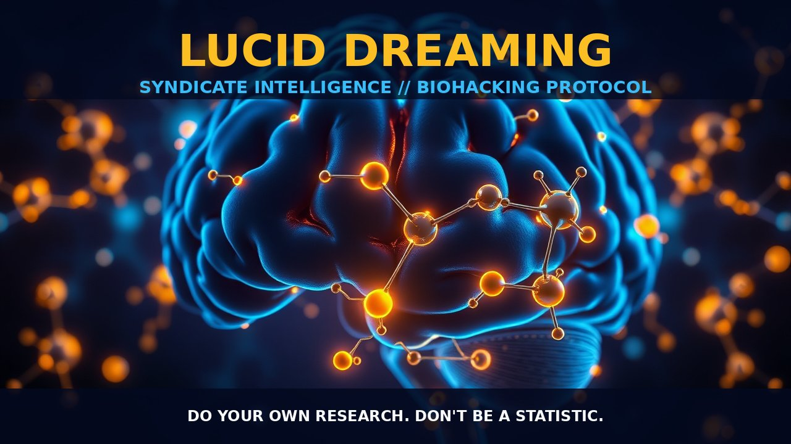

Lucid Dreaming

THE MECHANICS
Lucid dreaming is not just a psychological phenomenon; it's a complex neurological event with specific core physiological mechanics. The brain regions involved include the frontal lobes, parietal lobe, thalamus, and temporal lobe, all of which play crucial roles in consciousness, sensory integration, and memory consolidation during sleep. The activation of the prefrontal cortex (PFC), particularly heightened PFC activity, is essential for achieving self-awareness within dream states, facilitating lucidity. Moreover, neurotransmitter systems such as serotonin, norepinephrine, and acetylcholine are implicated in regulating the intensity and recall of dreams during REM sleep.
Specific dosages or protocols have shown promise in inducing lucid dreaming. Galantamine, an alkaloid extracted from the snowdrop flower, emerges as a potential catalyst for LDS at dosages between 16 to 24 mg daily (Yuschak-approved). The Wake Back To Bed (WBTB) protocol involves waking after several hours of sleep and then attempting to fall back asleep, potentially enhancing dream recall and inducing lucidity. Reality Testing—practiced during wakefulness to condition the brain in distinguishing dreams from reality—enhances one's ability to experience lucid dreaming by sharpening cognitive discernment between dream states and real-life situations.
THE BIOLOGICAL LEVERAGE
The actionable biological leverage of lucid dreaming lies in cognitive training, neurofeedback, and genetic predisposition. Engaging in Reality Testing exercises during waking hours fortifies the cognitive faculties required for self-awareness and control within dreams. This cognitive sharpening prepares the brain to recognize and act upon dream scenarios with greater acuity. Additionally, neurofeedback training using brain-computer interfaces (BCIs) can enhance frontal alpha asymmetry or other specific EEG patterns associated with heightened prefrontal cortex activation. By refining brainwave activity, individuals may achieve a state more conducive to lucid dreaming.
Genetic predisposition plays a pivotal role in one's ability to experience vivid and lucid dreams. Those with a family history of such experiences often possess inherited biological advantages due to variations in genes associated with neurotransmitter regulation and brain structure. These genetic underpinnings contribute to an individual’s innate capacity for dreaming, possibly providing a foundation more fertile for the occurrence of lucid dreams.
THE TACTICAL IMPLEMENTATION
The tactical implementation of lucid dreaming involves directly applying the mechanisms and leverage previously discussed into practical techniques for maximizing dream control. Reality Testing is not just a theoretical exercise but a daily practice meant to build up the cognitive muscles required for recognizing the dream state and exerting control over one's actions within it. The disciplined application of this technique serves as the foundation upon which more advanced techniques are built.
The Wake Back To Bed protocol offers an accessible method for enhancing dream recall and inducing lucidity without requiring complex regimens or extensive time commitments. Its simplicity belies its effectiveness, serving as a straightforward yet potent tool in the arsenal of those seeking to command their dreams.
By understanding the core physiological mechanics and leveraging biological factors such as cognitive training and genetic predisposition, individuals can better position themselves for successful LDS experiences. Combining these approaches provides a comprehensive strategy for cultivating lucid dreaming, empowering users with the knowledge and tools needed to take control of their dreamscapes.
Do your own research. Don't be a statistic.
Prostar Life Hack
Always verify protocol biological leverage with baseline biometric tracking. Data is sovereignty.
[ AUTHOR: LEAD TECHNICAL RESEARCHER ]